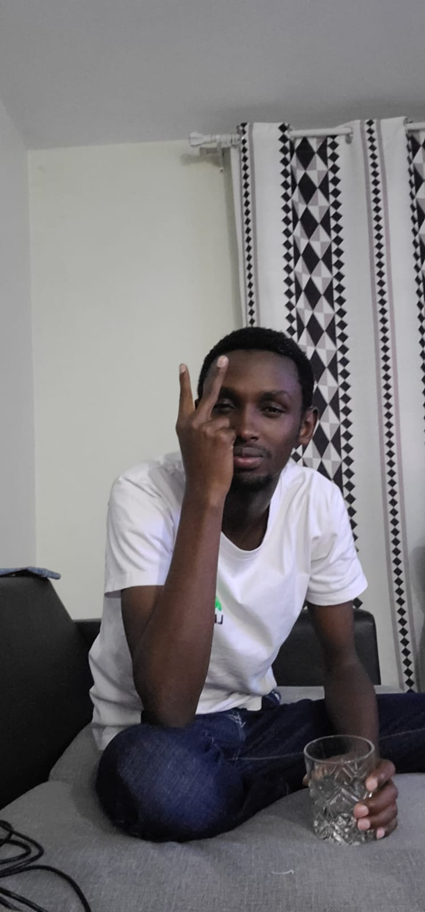

I came into this world in the year 2002, a time filled with promise and the dawn of a new millennium. As the second-born in our family, I was welcomed into a home already buzzing with the joy and laughter of my elder sister, Thia. Little did I know that this was just the beginning of a remarkable journey through childhood.
Our family resided in Nairobi, a city that hummed with energy and diversity. However, it was in Kikuyu, nestled in the heart of Kiambu county, where the roots of my early memories took hold. The vibrant colors of Kikuyu painted the backdrop of my upbringing, and the community spirit became an integral part of who I am.
Growing up alongside Thia, who was not just a sister but a constant companion and source of inspiration, and our youngest member, Leo, added an extra layer of warmth to our home. Our bond as siblings was unbreakable, and we navigated the journey of childhood together.
Basketball became my passion early on, and that flame has only grown brighter with time. The sound of the ball hitting the court, the squeak of sneakers, and the camaraderie with teammates formed the soundtrack of my youthful days. It wasn't just a sport; it was a love affair that has endured through the years.
Skateboarding entered my life as a thrilling adventure. Learning to balance and glide through the streets of Kikuyu brought a sense of freedom and excitement. The pavement became my canvas, and the skateboard, my brush, painting stories of exploration and discovery.
In the quaint surroundings of Kikuyu, I cultivated a small but tight-knit circle of friends. Each friend brought a unique flavor to our experiences, and together, we wove a tapestry of shared memories. Our adventures, laughter, and occasional mischief created the foundation of lasting friendships.
Traveling became a cherished part of my upbringing. Whether it was exploring the bustling streets of Nairobi or embarking on road trips to discover the beauty of Kiambu county, each journey
